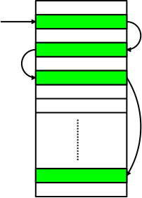

Slab allocator of the week: SLUB+Queuing
But SLUB does better than slab on other benchmarks, and its code is widely held to be more readable than slab - though that is widely held to be faint praise. So, over the years, attempts have been made to improve the SLUB allocator's performance. The latest such attempt is SLUB+Queuing which, according to its developer Christoph Lameter, beats slab on the all-important "hackbench" benchmark.
There are a couple of significant changes in the SLUB+Q patch set which are intended to improve the performance of SLUB. At the top of the list is the restoration of queues to the allocator. SLUB+Q does not use the elaborate queues found in slab, though; there is, instead, a single per-CPU queue containing pointers to free objects belonging to the cache. Allocation operations are now simple, at least when the queue is not empty: the last object in the queue is handed out, and the length of the queue is decreased by one. Freeing into a non-empty queue is similar. So the fast path, in both cases, should be fast indeed.
If a given CPU's queue goes empty, the SLUB+Q allocator must fall back to allocating objects out of pages, perhaps allocating more pages in the process. That, of course, is quite a bit slower. In an attempt to minimize the cost of this slow path, SLUB+Q will go ahead and pre-fill the queue, up to the "batch size" (half of the queue's total length, by default) with free objects. So, in a situation where many more objects are being allocated than freed, the fast allocation path will continue to be used most of the time.
If the queue overflows, instead, the allocator must push objects back into the pages they came from. Once again, the behavior chosen is to prune the queue back to a half-full state; the allocator will not push back all objects in the queue unless the kernel has indicated that it is under serious memory pressure. The default size of the queue is dependent on the object size, but it (along with the batch size) can be changed via a sysfs parameter.

The other significant change has to do with how free objects are handled when they are not stored in one of the per-CPU queues. In current mainline kernels, SLUB maintains a list of pages which contain some free objects. Note that it does not keep pages which are fully allocated (those can be simply forgotten about until at least one object contained therein is freed); it also does not keep pages which are fully free (those are handed back to the page allocator). The partial pages contain one or more free objects which are organized into a linked list, as is vaguely shown in the diagram to the right. There is a certain aesthetic value to doing things this way; it uses the free memory itself to keep track of free objects, minimizing the amount of overhead needed for object management.Unfortunately, there is also a cost to storing list pointers in the freed objects. Chances are good that, by the time the kernel gets around to freeing an object, it will not have been used for a bit; it may well be cache-cold on the freeing CPU. Objects which are on the free list are even more likely to be cache-cold. Putting list pointers into that object will bring it into the CPU cache, incurring a cache miss and, possibly, displacing something which was more useful. The result is a measurable performance hit.
Thus, over time, it has become clear that memory management is more efficient if it can avoid touching the objects which are being managed. The SLUB+Q patches achieve this goal by using a bitmap to track which objects in a given page are free. If the number of objects which can fit into a page is small enough, this bitmap can be stored in the page structure in the system memory map; otherwise it is placed at the end of the page itself. Now the management of free objects just requires tweaking bits in this (small) bitmap; the objects themselves are not changed by the allocator.
The hackbench benchmark works by creating groups of processes, then quickly passing messages between them using sockets. SLUB has tended to perform worse on this benchmark than slab, sometimes significantly so. With the new patches, Christoph has posted benchmark results showing performance which is significantly better than what slab achieves. If these results hold, SLUB+Q will have overcome one of the primary problems seen by SLUB.
It should be noted, though, that performance on a single benchmark is not
especially indicative of the performance of a memory allocator in general;
SLUB already beat slab on a number of other tests. Memory management
performance is a subtle and tricky area to work in. So a lot more testing
will be required before it will be possible to say that SLUB+Q has truly
addressed SLUB's difficulties without introducing regressions of its own.
But the initial indications look good.
| Index entries for this article | |
|---|---|
| Kernel | Memory management/Slab allocators |
| Kernel | Slab allocator |